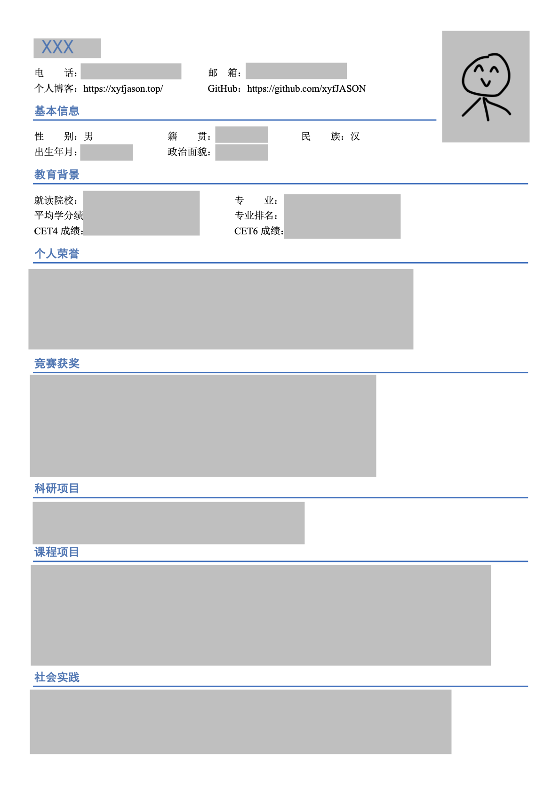
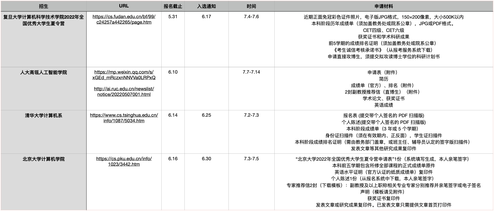
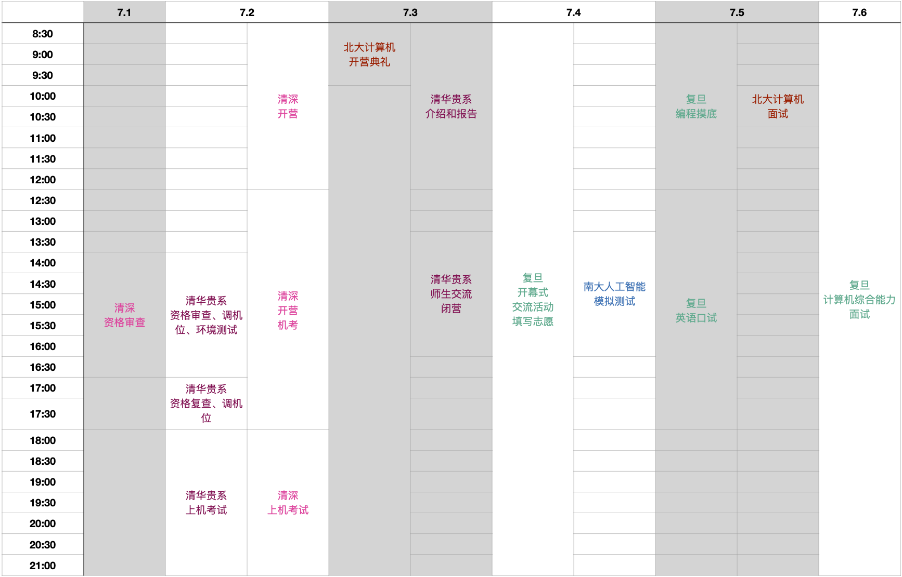

保研回忆录
话说我本来都想把保研回忆录给咕咕咕了，但是学弟突然邀请我做个保研分享，遂借此机会把坑给填上。
1 个人情况
1.1 基本情况
- 本科学校：C9 计算机专业
- 专业排名：3/300+ (Top 1%)
- 荣誉奖项：一次国家奖学金
- 竞赛奖项：ICPC 区域赛银，CCPC 区域赛银，数学竞赛省一，数学建模国赛省一
- 科研经历：夏令营期间有两个课题正在进行之中，无论文产出
- 最终去向：中科院计算所 学硕
1.2 目标定位
- 院校：冲清北本部，但自知概率较小；确保华五 / 人大 / 计算所 / 自动化所能拿到 offer；本校仅作兜底；不考虑同层次其他学校。
- 方向：AI，计算机视觉（没错，就是最卷的方向中最卷的领域……）
- 学位：学硕 / 强组直博
- 导师：人品最为重要，其次是方向和课题组的学术水平
2 关键时间点
2.1 准备基本材料
简历：一页 A4 纸，尽量简洁明了。具体内容因人而异，我分了以下几栏，仅供参考：
- 基本信息（我甚至放了个人博客链接和 GitHub 链接，嘿嘿）
- 教育背景（学校、专业、成绩、排名、四六级）
- 个人荣誉（国家奖学金等）
- 竞赛获奖（挑重量级的，太拉垮的不好意思放……）
- 科研项目（可以附上一句话简述工作内容）
- 课程项目（
页面不够拿来凑数） - 社会实践（
页面不够拿来凑数）
我没有找模板，就自己用 word 随便画了画：

个人陈述：介绍学术背景、科研兴趣方向以及对今后学习研究工作的设想和计划。
建议提前准备多个版本——1500字、1000字、500字。我是先写了 1500 字的，然后在此基础上删减得到其他版本。
套磁邮件：注意给学校、导师姓名、导师方向留出空位，用其他颜色标出来方便改动。不建议用 qq 邮箱。
推荐信：大多数学校要求 2 封副教授及以上职称的推荐信。平时有熟络的老师最好了，没有就厚着脸皮去要（逃）。一般自己先写一份大致的，然后给老师修改。
自我介绍：面试用，中英文都要准备，2 min 左右吧。
其他材料（成绩单、排名证明、证书扫描件等）：按照夏令营要求提供即可。
复试 ppt：把简历 / 个人陈述的内容做成 ppt 就好。
2.2 套磁导师（3～5月）
通过学校官网、Google scholar、导师评价网等多方面渠道查找感兴趣的导师信息，发邮件联系。如果导师对你感兴趣，可能会和你约时间聊聊天啥的。
不过就我的经验来说，发出去的邮件很有可能石沉大海。我发的有点晚，5 月份才开始发，发了 14 封左右，1 个导师加了微信、1 个让填申请表、2 个名额已满拒了、其他全都没消息。所以导师没回邮件的话大家不要气馁（才发现「馁」居然读 něi 而不是 lěi）。
一般认为，不要同时给同校的老师发邮件，不然可能发生如下对话：
A 老师：诶，B 老师啊，一起吃饭去？
B 老师：好啊。话说今天收到个 xxx 学校学生的邮件，想读我的研究生。
A 老师：好巧，我也收到了一个 xxx 学校学生的邮件。
B 老师：啊？不会是同一个人吧？
A 老师：嘿！还真是同一个人诶！
（以上均为脑补，如有雷同，纯属巧合）
这就有点尴尬……所以最好等到前一个老师拒绝了或者好几天都没回复，再给同校的另一个老师发。
题外话，同研究领域的圈子真的很小，你能想象我发现我联系过的 A 老师给另一个学校的 B 老师的朋友圈点赞之后的表情吗……
2.3 夏令营报名（5～6月）
关注各院校官网的夏令营报名通知，按要求提交相应材料。
建议列一个 excel 表写明截止时间、通知链接、所需材料，按照截止时间排序以免漏掉。比如：

2.4 夏令营进行（7～8月）
有些学校的时间会冲突，所以要做一定取舍。我们这届由于疫情原因全部线上进行，省去了线下到处跑的时间，所以冲突的不是很多。
机试 / 面试需要安静无人的环境，可以向学校借空教室，记得门口贴个告示以免有人误入。
同样建议列一个 excel 表，组织成日历的形式，这样冲突情况一目了然，也方便安排时间。比如：

详细情况放在下一节。
2.5 预推免（8～9月）
由于我在夏令营已经拿到了满意的 offer，并且计算所没有鸽学生的先例，所以预推免就直接躺平没有参加了。
不过听说预推免机会还是很多的，如果夏令营没有拿到满意的 offer 或者想再冲一冲更好的学校，还是建议参加。
2.6 接受录取通知（9月28日起）
大部分学校 9 月 28 日中午在推免系统上发出通知，然后你就能看到满天飞的鸽子。被鸽穿的学校只能沿着 waiting list 往下一个个打电话，对学生来说却是一个捡漏的好时机。
与大多数学校火急火燎形成鲜明对比，计算所非常佛系，一直到 30 日才发通知。群友都在发「我知道你很急，但先别急，先让我急」。可以说，留下来的都是真爱～
3 夏令营详细情况
部分学校要求保密夏令营考核的具体内容，我也无意违反。但如果有院校或同学认为以下涉及了保密事项，请联系我，我将第一时间删除相关内容。
| 学校 | 院系 | 入营 | 结果 |
|---|---|---|---|
| 清华 | 叉院 | 否 | - |
| 清华 | 贵系 | 是 | 机试通过，未参加预推免 |
| 清华 | 深研院 | 是 | 时间冲突，放弃 |
| 北大 | 计算机学院 | 是 | 寄 |
| 北大 | 智能学院 | 否 | - |
| 人大 | 高瓴 | 是 | 优营，放弃 |
| 南大 | 人工智能 | 是 | 寄 |
| 南大 | 计算机 | 否 | - |
| 中科院 | 自动化所 | 是 | 优营，放弃 |
| 中科院 | 计算所 | 是 | 通过，最终去向 |
| 复旦 | 计算机 | 是 | 时间冲突，放弃 |
| 上交 | 电院计算机系 | 是 | 优营，放弃 |
3.1 清华贵系
印象里清华要的材料非常少，什么推荐信啥的都不用。但是清华在夏令营是不发 offer 的，仅仅做一场机试，根据机考成绩决定是否获得直接参加9月推免复试的资格。推免复试时可以申请以夏令营的机考成绩代替推免复试的机考成绩。
机试 3 小时三道题，竞赛风格，所以 OIer / ACMer 有很大的优势。IOI 赛制，即有部分分，并且实时反馈结果，可以说是最友好的赛制了。第一题签到，第二题有难度，第三题只会拿暴力分（我太菜了～）。两天后就能收到反馈邮件。
值得注意的是，清深和本部的夏令营是同时进行的，只能二选一。
3.2 北大计算机
与清华形成鲜明对比的是，北大要的材料特别多。北大似乎是在入营之前，你报名的老师就会先来联系你，然后决定入不入营。我报名的老师（以下称作 Z 老师）本来没名额了，把我推给了另一位老师（P 老师）。结果和 P 老师视频聊过一次后，Z 老师也来视频聊了。聊一次就是两三个小时，内容主要集中在科研理想方面。通过这两次聊天，我真切地感受到北大老师眼界之高远，他们对科研的态度绝不只是发个顶会顶刊啥的，而是要做出真正有影响力、推动领域发展的工作。比如老师和我聊的时候就问我，你觉得人工智能领域最有影响力的工作是什么？给它们排一个 level？以及你想做什么 level 的工作？说实话，我之前还确实考虑过这个问题，但是视野局限在我比较熟悉的视觉领域。总而言之，这两次聊天可谓是「与君一席话，胜读十年书」。
聊完之后，Z 老师给我发了三篇论文，让我读一读。一篇是 Yoshua Bengio 关于下一代人工智能的高角度思考，一篇是自动驾驶的 BEV 感知，还有一篇是计算神经学的 GPU 计算架构。可惜三个领域我都不熟，确实花了我挺多精力的……最后做了个 ppt，但是也没有汇报。
后来顺利入营，然后只需要面试一场，没有笔试机试。面试不考察基础题，主要问一些对科研的看法，但是我表现得有点糟糕……感觉没有表达清楚就匆匆结束了，最后不出意料地寄了。
3.3 南大人工智能
南大应该是只能入一个营，所以我计算机就没入。我的一个同学最后就去了南大的计算机。
南大人工智能学院有笔试和面试两场。笔试好像是一些数学基础题和专业题，面试是也是问一些数学题。众所周知，南大的机器学习非常强，所以重视数学基础也是很正常的。然而——我那时候没有复习啊！几道概率论直接给我干懵了（事后想起来有一道其实非常简单的……），现场一度很尴尬。果然很快就收到了「很遗憾」的邮件。
为避免重蹈覆辙，我遂花了两天时间把《概率导论》和《线性代数及其应用》给翻了一遍，试图收集起那些飘渺如烟的记忆……
据去了南大计算机的同学称，计算机那边笔试考的是很难的 408，得不得分看你运气……
3.4 人大高瓴
报名的时候，高瓴给出的时间是 7.7～7.14 整整一周，害得我以为铁定和其他学校冲突，后来发现其实只是其中的四天、每天一个时间段而已。笔试内容签了保密协议，但是说实话我现在也记不清了……好像有一些常规的数学题和算法题啥的。面试也比较常规，英文问了个社会问题，然后问了一些简单的专业题，然后谈一谈做过的项目，然后就没了。
最值得吐槽的一点是，如果你排到了面试组的最后一个——恭喜你，你必须在镜头前啥事儿也不能干坐牢一整个上午，非常影响参营体验（虽然我排得还算靠前，但是我极其同情最后那名同学）！本来以为人大的人文关怀应该多一些的……
其实高瓴有一个我非常喜欢的老师，可惜我傻乎乎地等到优营名单放出来之后才去联系，然后他说他那边名额几乎已经没了，最后遗憾没有去成，悲。
3.5 上交电院计算机系
非常神奇的是，上交直博只有面试，学硕反而有机试和面试。面试要做 ppt，自我介绍之后就谈了谈做过的项目（然后英文再讲一遍，大雾），好像就没了……我很好奇上交是怎么通过如此简练的面试筛人的。
优营通知发的挺晚，等它下来的时候我已经接了计算所的 offer 了，遂放弃。
3.6 中科院自动化所
自动化所会安排学长/学姐带一个小组，还会搞破冰活动（但是线上也就只能是开视频自我介绍一下了）。缺点就是各种各样的报告讲座属实有点多（不过线上嘛，懂得都懂，但是要截屏签到）。
最后面试也很常规，问一些数学题、专业题，英文问答一下，谈一谈项目，结束。
3.7 中科院计算所
终于到计算所了。计算所是以课题组为单位招生的，组与组之间的考核完全独立，所以我只能讲我去的组（VIPL）。计算所入营的 bar 似乎不高，上至清北下至双非都能进。导师拥有很大的权力，听说如果事先有所交流并且满意的话，即便没有入营都能把你捞进来。我的经历正好相反，我没有事先联系任何一个老师，结果面完就立刻敲定了，非常奇幻。
VIPL 组报名的人有亿点点多，所以考核是先笔试、再机试、最后面试，逐层筛选。笔试内容分为数学、算法、专业（主要是机器学习）、中英文写作、综合五部分。数学题覆盖面广，幸好之前复习了一下，不过没复习到的曲面积分啥的还是空着了；算法题可能也比较常规吧（我不知道，我对算法题难度没有概念，逃）；机器学习有一道题手推 SVM，这我还真忘了；中英文写作是双向翻译以及总结文章；综合题就是一些找规律、看几何体这种快乐题。机考允许选择 C++ 或 Python，然后限时做几道编程小题，必须用 Visual Studio，非 online judge，考完打包发过去。面试的气氛甚至有些随意，介绍了一下科研项目，然后就开始问爱好特长、社会实践之类的，最后还问怎么看待疫情防控（好像问社会问题是计算所的传统项目）。
面试当晚就和老师加了微信互相确认，至此夏令营收官。
4 瞎扯
正如开头所言，这篇文章写得有点晚，很多细节已经不记得了，可能参考意义有限。如果有说得不对的地方，还望指正。
经过这几个月的折腾，我深刻地感受到了保研就是一场超大规模不完全信息博弈，学生常常手拿多个 offer 还去冲更好的学校，导师怕学生放了自己的鸽子导致招不到好学生。对于一些不好意思鸽导师而拒掉了其他 offer 的学生（比如说我），就天天担心最后没书读了……每个人都做出最有利于自己的选择，总体上却陷入纳什均衡，多少有点无奈，有点感慨。尘埃既定时，我们唯一能做的，就是沿着选择的路走下去，并认真走好未来的每一步。